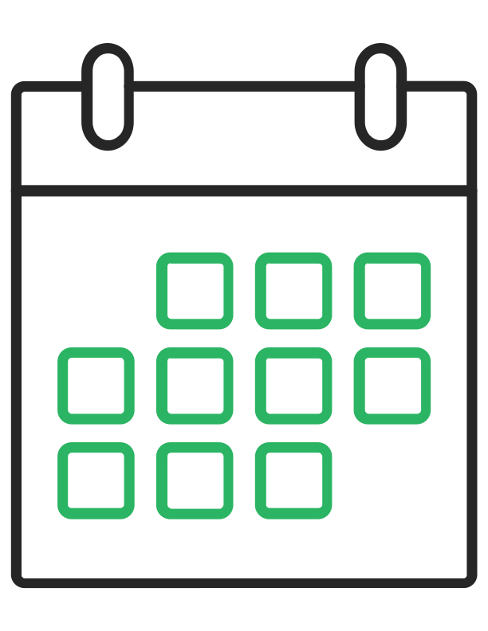
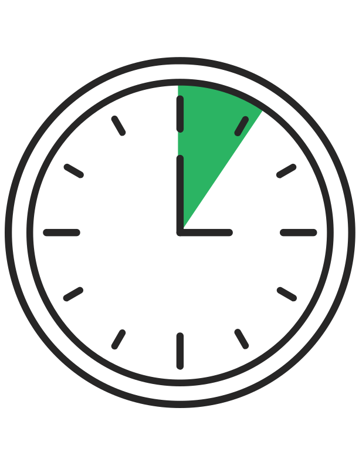

It's me your PHLXXR- supplied mobile device.
Six months ago. You took our course on Managing Bias. Remember that?
Today, we'd like no more than ten minutes of your time to check in and refresh the ol' noggin.
Don't worry if you don't rememebr everything - we all get a little rusty. (Not me, though. I'm mostly aluminium and ceramic glass.)
We also have a Help Center to answer any question any questions you may have down the line.
For this refresher, you'll need two things: me and your thumb. You might occasionally need another digit, too.
To get around, swipe down.
(I know you’re used to swiping right for the good stuff, but I promise if you swipe down, it’ll be worth your while.)
Feel free to take these lessons in any order. You might even want to do them in the order of most to least familiar. When you’re done, you’ll answer a few final questions in Check Yourself.
(Not that I’m implying you’re about to wreck yourself.)
We recommend connecting to WiFi during this experience. Sound good? Great.
Welcome! If you click on the link below, it will take you to the Menu.